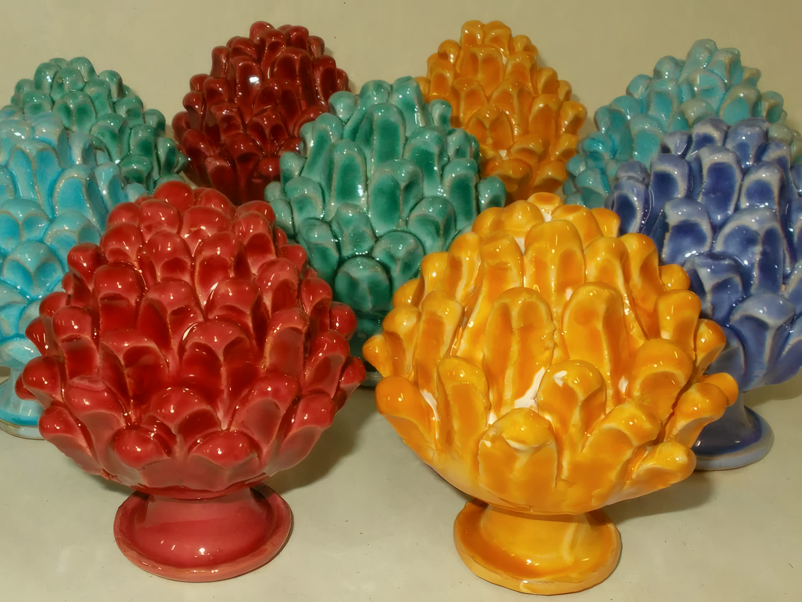
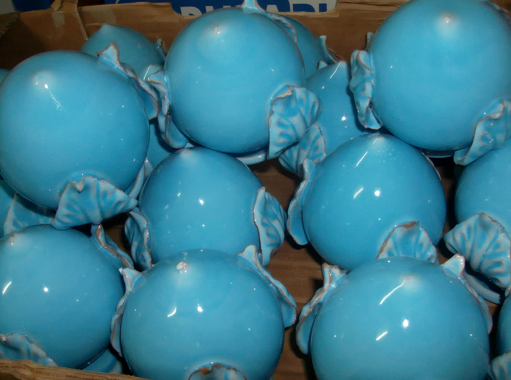
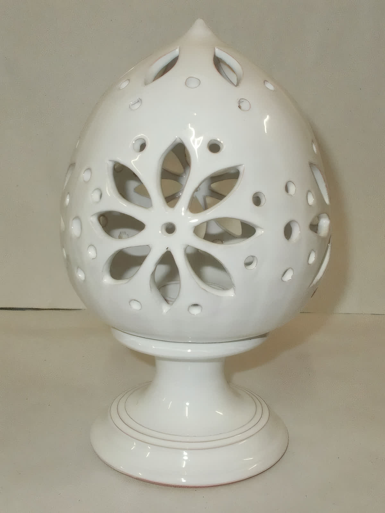
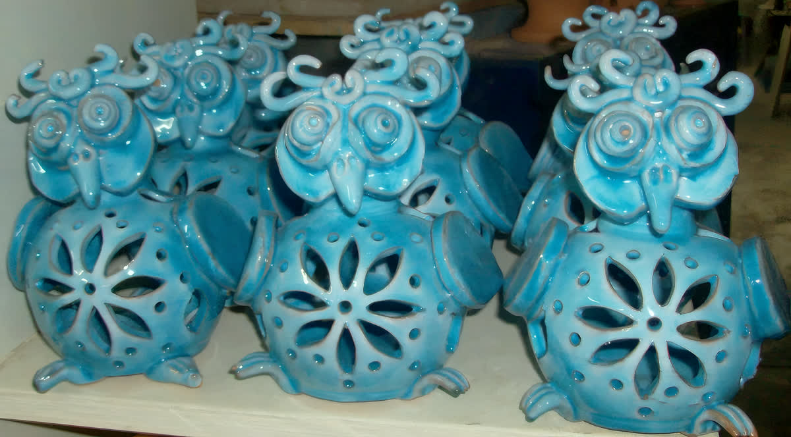
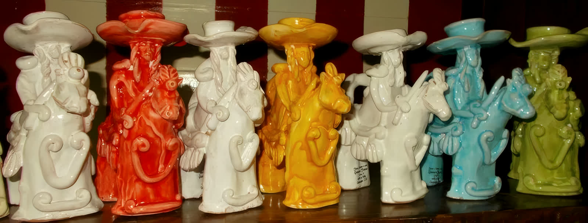
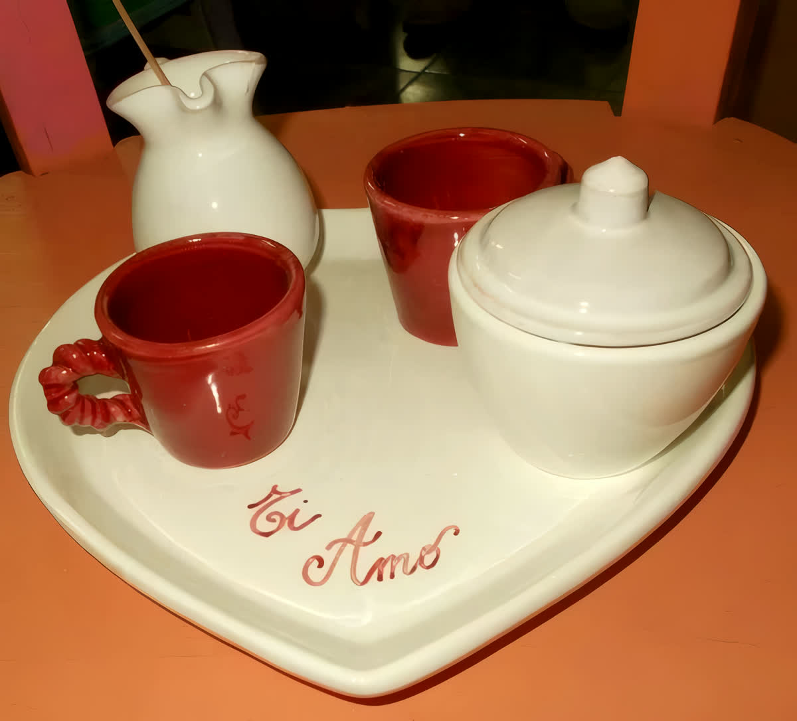
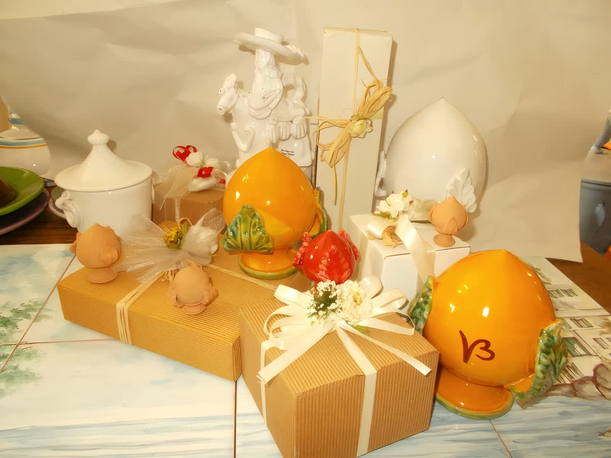
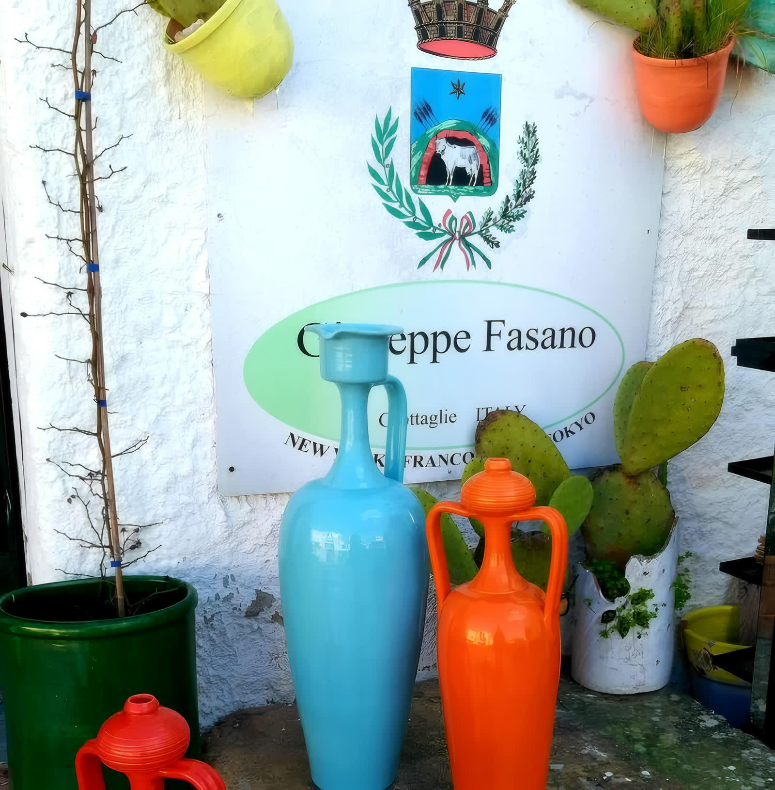

Pumi e pigne
Il bocciolo portafortuna di Puglia e la pigna a scaglie, negli smalti pieni della tradizione.

Grottaglie · Città delle Ceramiche
Ceramica artistica di Grottaglie. Una famiglia di ceramisti con libri e scritti datati fin dal 1600.
Lavoro l'argilla e decoro la ceramica dalla mia fanciullezza. La mia è una storica famiglia di ceramisti con libri e scritti datati fin dal 1600. Come produttori di ceramica artistica ci tramandiamo questa nobile arte da padre in figlio fin dall'antichità. Giuseppe Fasano
La bottega sta a Grottaglie, nel paese che alla ceramica ha dedicato un quartiere intero. Qui i pezzi nascono al tornio, passano per il forno e prendono lo smalto uno per volta.
Ogni pezzo è dipinto a mano: per questo due pumi dello stesso colore non sono mai identici.

Le forme della tradizione di Grottaglie, più le bomboniere d'autore per sposi, comunioni, cresime e battesimi. In bottega i pezzi cambiano con le infornate.
Il bocciolo portafortuna di Puglia e la pigna a scaglie, negli smalti pieni della tradizione.

Ceramica traforata che lascia passare la luce, in diversi colori e misure.

Il gufo della buona sorte, in fila sullo scaffale e in tutte le tinte dello smalto.

Le figure dipinte del repertorio popolare pugliese, modellate e decorate a mano.

Servizi da due, alzatine e vassoi, personalizzabili con la scritta che vuoi.

Tutto per gli sposi, comunione, cresime e battesimi, e complementi d'arredo su misura.
Clicca una fotografia per vederla grande. Per sapere cosa c'è adesso in negozio, e per un pezzo su misura, scrivi o passa in Via Caravaggio.
Ho voluto portare un messaggio della mia arte in giro per il globo con fiere, mostre e filiali dove, con sacrificio, ho fatto conoscere le ceramiche di Grottaglie. Atelier a New York City, con la collaborazione dell'ICE, e nel cuore di Tokyo. E nella nostra Europa con sede a Milano centro e Francoforte. Giuseppe Fasano
È il motivo per cui sull'insegna della bottega, sotto il nome e lo stemma di Grottaglie, ci sono scritte tre città.

Targa di Eccellenza consegnata a Milano, a Palazzo Marino, il 10 novembre 2019, nella serata degli Ambasciatori Terre di Puglia.
Il libro dedicato a Giuseppe Fasano, «l'uomo e l'artista della ceramica», presentato al Castello Dentice di Frasso.
Il premio internazionale che la bottega dedica dal 2017 a Nicola Fasano, il padre di Giuseppe, e che porta il nome di Grottaglie città delle ceramiche.
Quando una produzione cerca la ceramica pugliese vera, arriva a Grottaglie.
«La vita davanti a sé», il film girato in Puglia da Sofia Loren con la regia di Edoardo Ponti: le ceramiche dell'atelier Giuseppe Fasano tra gli oggetti di scena.
«Il Sistema»: le ceramiche di Giuseppe Fasano sul set della fiction, dove lui stesso ha dato un contributo personale come comparsa.
«La mia bella famiglia italiana», tv movie con Alessandro Preziosi: ceramiche della bottega tra le scenografie.
La bottega è a Grottaglie, in Via Caravaggio. Per sapere cosa c'è adesso, per una bomboniera o per un pezzo su misura, chiama o scrivi.